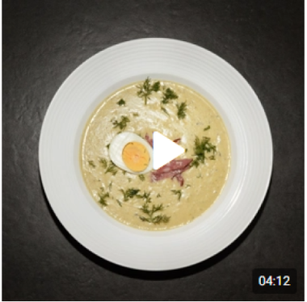

Breakfast Recipes
Discover the world of flavors
"As soon as you start the day, you will spend it" is not only folk wisdom, but also the urgent advice of nutritionists. Breakfast is probably the most important meal. It should provide instant energy, long-term satiety and at least improve mood. But in the morning we are not inclined to gastronomic experiments. The weekday morning repertoire includes all kinds of scrambled eggs, sandwiches, porridges, muesli and smoothies. But on weekends, you can arrange the morning more luxuriously: turn the glaze into elegant orsini eggs with whipped protein, try the ornate Guryev porridge with dried fruits, cook a multi—layered club sandwich or bake pancakes - we have collected all these recipes on the website. There are also national breakfast traditions: Middle Eastern shakshuka, classic English breakfast, Greek fried haloumi with fruits, and tricky sweet French omelet arbolada. Let the morning be interesting!

.png)


SOUPS · STEP-BY-STEP RECIPES
Polish white borscht
17 INGREDIENTS
| 6 SERVINGS
1 hour 10 minutes
ADD TO FAVORITES
1105
8,5
SOUPS · STEP-BY-STEP RECIPES
Polish white borscht
17 INGREDIENTS
| 6 SERVINGS
1 hour 10 minutes
ADD TO FAVORITES
1105
8,5